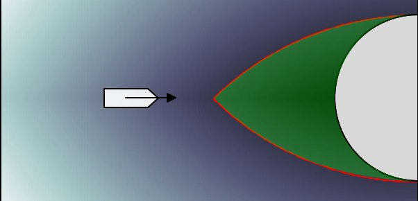

안전 제어01
Safe Control
제어장벽함수와 도달가능성 해석으로 궤적이 충돌 영역에 들어가지 않도록 보장
Control barrier functions · Reachability analysis · Safety-critical planning
- TCST 2026Turning-circle CBF
- Mechatronics 2026COLREGs avoidance
- IFAC 2023Reachability-based berthing